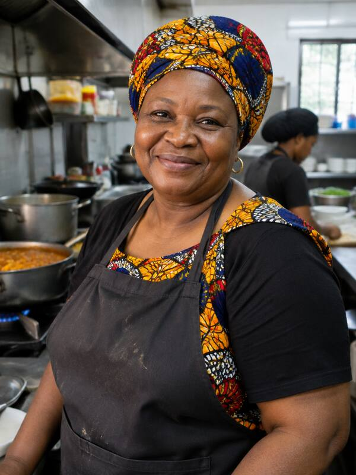
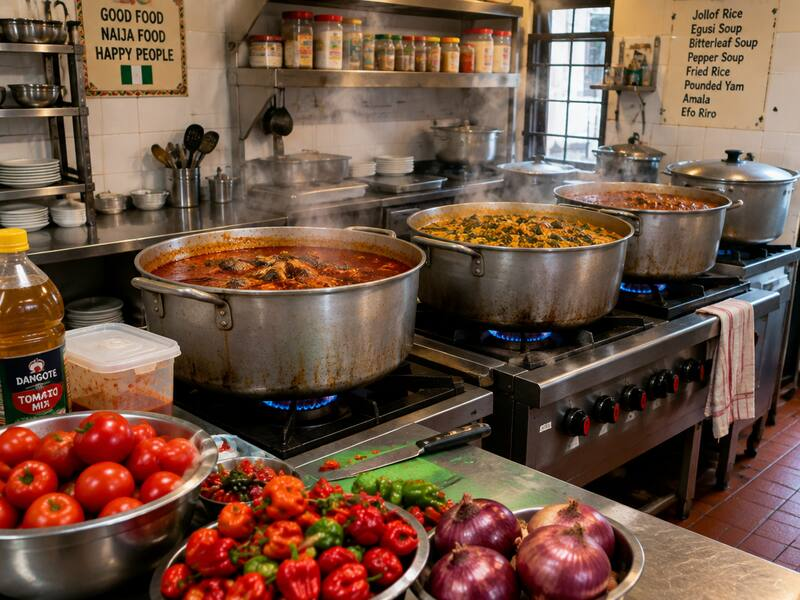

Our story
Twenty years. One recipe book. A whole lot of love.
How a single pot, one market trip and a stubborn promise became the busiest kitchen on Allen Avenue.
Mama's Kitchen started with one pot, one market trip, and a promise: that every plate leaving our kitchen would taste the way home tastes. Two decades on, that promise still shapes the way we cook.
Our rice is parboiled every morning. Our soups are stirred by hand. Our spices come from the same traders we started with in 2004. Nothing shortcut, nothing frozen, nothing rushed.
Mama Adaeze, Head Chef & Founder

What we believe
Four rules we don't break.
They haven't changed since the day we opened. They never will.
- Rice parboiled fresh every morning.
- Every soup stirred by hand.
- Spices from the same traders since 2004.
- Nothing shortcut, nothing frozen, nothing rushed.

Hungry yet?
Reserve a table for the weekend, or stop by any night of the week. First-time guests get a complimentary chapman on the house.
Reserve a table